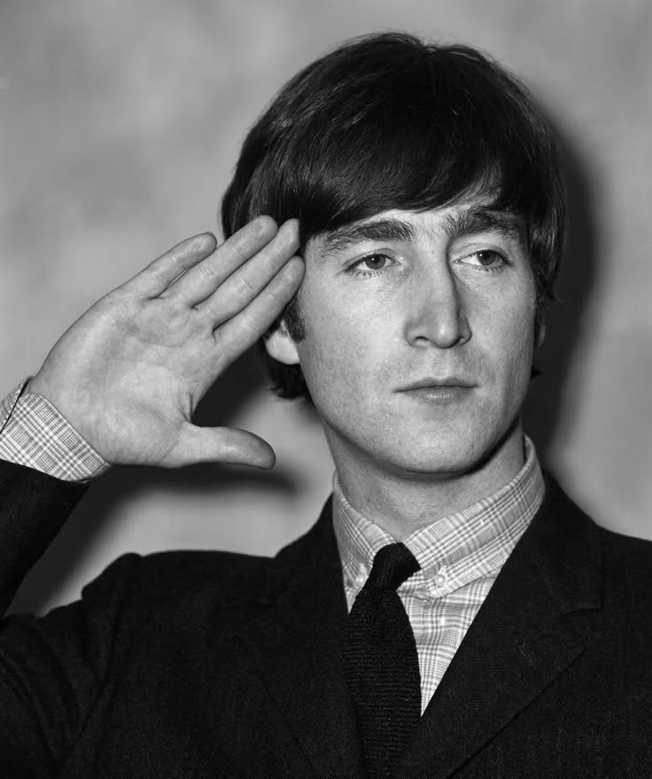
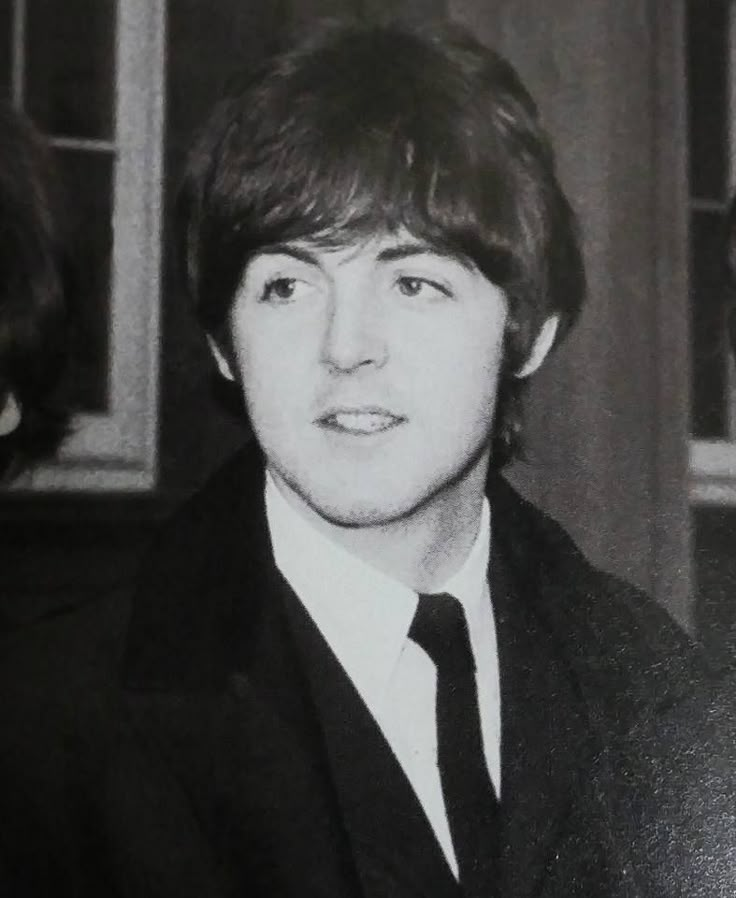
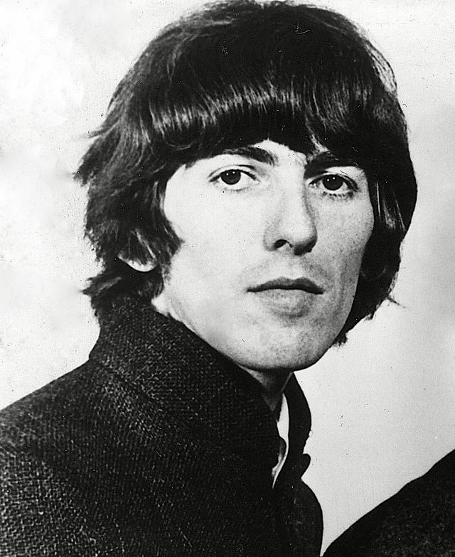
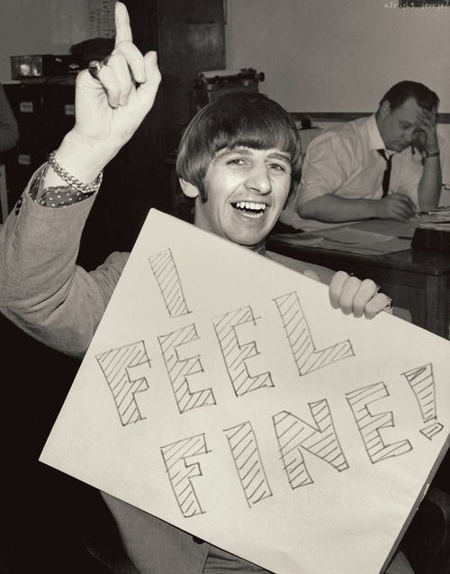

Як відрізняти членів групи The Beatles

Джон Леннон
Гострий довгий ніс та ширше підборіддя.

Пол Маккартні
Милі "цуценячі" очі.

Джордж Гаррісон
Густі темні брови та витягнуте обличчя.

Рінго Старр
Найбільший ніс у групі.